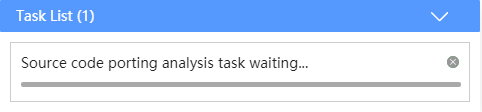
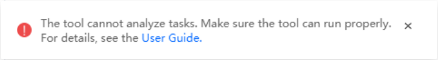

During source code porting, 64-bit mode check, structure byte alignment check, or memory consistency check, a message is displayed indicating that the task is waiting. After 30 minutes, another message is displayed indicating that the task timed out and prompts you to try again later or contact the administrator to check whether other users occupy resources for a long time.


Users occupy resources for a long time. As a result, all resources are occupied, and other user tasks wait for resources until timeout.
Contact the administrator to check whether other users occupy resources for a long time.